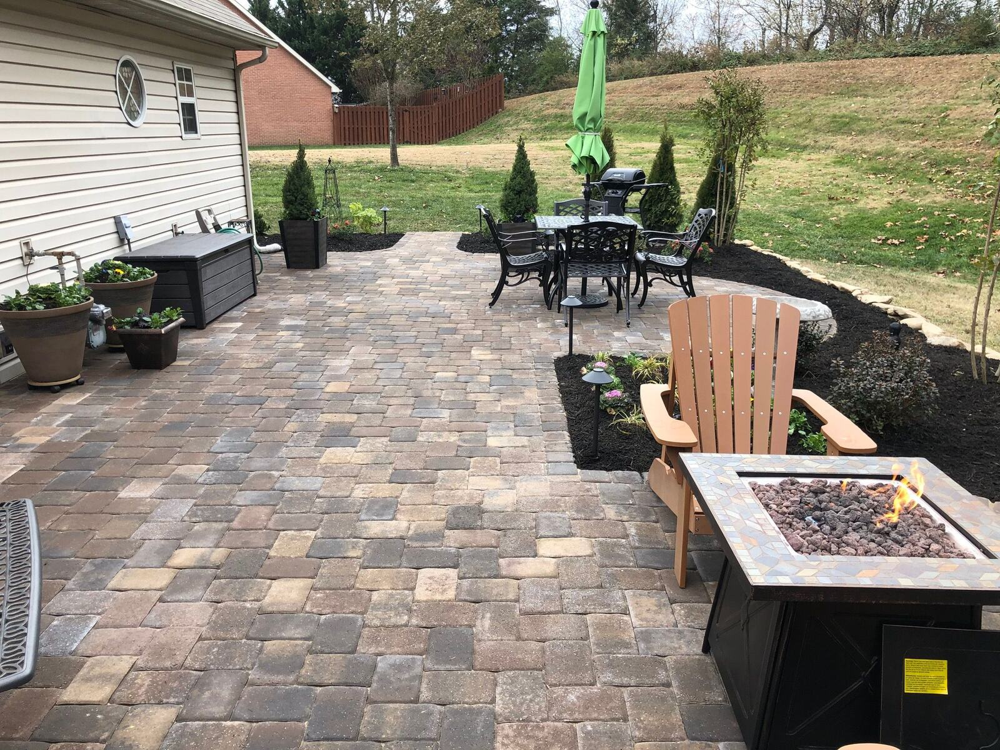

Have you been looking for ways to boost your property’s curb appeal while increasing your enjoyment of the space? A landscaping upgrade might provide the creative outlet you need.
It can be challenging, not to mention physically demanding, to do these jobs yourself, so consider hiring Tennessee landscape architects like The Yard Force to do the heavy lifting. Here’s more from the team about how to enhance the beauty of your property while making it more functional.
Read on to discover some creative options for crafting the outdoor space of your dreams.
Build a Dazzling Rock Garden — and More
One of our Knoxville team’s most popular residential landscaping ideas has been using rock gardens in various parts of the yard. This type of design allows for significant versatility, including rocks of varying sizes, colors, and shapes, to create wonderful visual appeal. Of course, creating a rock garden doesn’t limit your additions to rocks!
Want flowers, spreading plants, or ornamental trees to complement the colors and shapes of the rocks? Add potted plants inside ornamental pots that increase the visual appeal, too. You might even hide the pots from view by using clever positioning of the rocks for a more natural effect.
In whatever way you decide to design it, using a rock garden is a low-maintenance option. If you don’t want to spend significant time caring for the landscaping on your property, rocks don’t need weeding, pruning, or planting.
Add an Amazing Outdoor Kitchen and Fire Pit
If you enjoy hosting gatherings for friends and family members, you could provide the much-needed additional living space with a new landscape design. Tennessee design professionals create outdoor kitchen areas for local clients to take advantage of the beautiful weekends and evenings we get to enjoy here. Why have everyone gathered inside the home’s kitchen when guests can spread out and relax in the fresh air?
With an outdoor kitchen, you can deliver a space that perfectly fits your needs. Want a large grill for outdoor cooking or a countertop where you can do preparation and cleanup? That’s a great idea!
Some people like incorporating a fire pit near the outdoor kitchen. You could easily use the same design colors and materials from the outdoor kitchen to give you a beautiful, seamless entertaining area!
Find Features That Pop in Every Season
Proven property transformation landscaping ideas focus on year-round enjoyment of the space. The Knoxville, Tennessee, region experiences all four seasons, and we know that some landscape design ideas work better in summer than winter. By using a variety of plants and beautiful hardscaping features in your landscaping project, a great design can deliver visual appeal throughout the year.
In spring, you might plant early-blooming flowers that generate a pop of color at the start of the growing season. For winter, you might plant evergreen trees or bushes that provide colorful berries during the dormant season. The mix-and-match balances things out.
Set Up a Serene Relaxation Area
If you want your property to feel like an oasis after a busy day, several elements can contribute to creating this serene area. Want more time to focus on your health and mental wellness? Using walking paths lets you enjoy nature without risking damage to your plants or thorns on tender bare feet.
Do you have people in your household who rely on a wheelchair or walker? Smooth, beautiful pathways let everyone enjoy the gardens safely. You might also consider:
- Seating areas within the landscaping for meditation and rest.
- Fences and natural plant barriers for privacy and quiet.
The sky’s the limit!
Think About Nighttime Sparkle, Too
Finally, remember that the visual appeal of your landscaping doesn’t have to stop when the sun sets. Design elements can provide a space you’ll absolutely love to use and show off when it’s dark, too. With so many new options for LED lights and solar-powered lighting, you can add energy-efficient lights to almost any area and create gorgeous lighting effects.
Illuminating your property enhances curb appeal at night while also providing improved security. Some people love to add accent lighting along walking paths, or that highlight certain areas of the garden. If you have a pool or outdoor kitchen where you host parties, you might even want lighting that you can sync with music when the occasion calls for it!
Any lighting ideas can incorporate a variety of colors and brightness levels. Whether you want to illuminate a flag pole or an entire yard, anything is possible.
You might have some of your own ideas for the transformation in addition to the creative yard design ideas we use regularly. The experts at The Yard Force would love to hear them and collaborate with you on a fantastic new design for your outdoor space. Contact us today at (865) 290-8815 to learn more about our local landscaping services based in Knoxville, Tennessee!